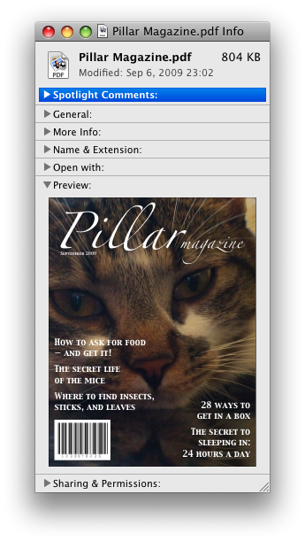
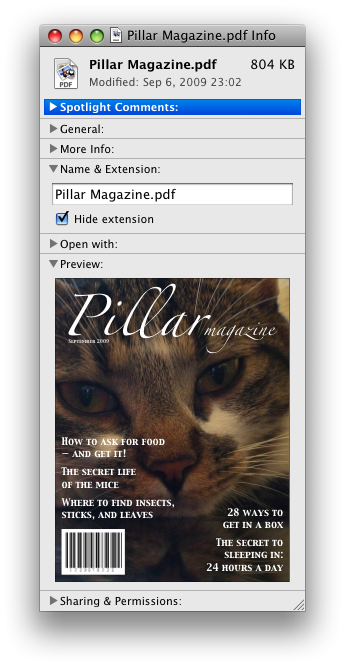

dialog elementdetails elementsummary element followed by flow content.name — Name of group of mutually-exclusive details elements
open — Whether the details are visible
[Exposed=Window]
interface HTMLDetailsElement : HTMLElement {
[HTMLConstructor] constructor();
[CEReactions, Reflect] attribute DOMString name;
[CEReactions, Reflect] attribute boolean open;
};The details element represents a disclosure widget from which the
user can obtain additional information or controls.
As with all HTML elements, it is not conforming to use the details
element when attempting to represent another type of control. For example, tab widgets and
menu widgets are not disclosure widgets, so abusing the details element to
implement these patterns is incorrect.
The details element is not appropriate for footnotes. Please see the section on footnotes for details on how to mark up footnotes.
The first summary element child of the element, if any,
represents the summary or legend of the details. If there is no
child summary element, the user agent should provide its own legend (e.g.
"Details").
The rest of the element's contents represents the additional information or controls.
The name content
attribute gives the name of the group of related details elements that the element is
a member of. Opening one member of this group causes other members of the group to close. If the
attribute is specified, its value must not be the empty string.
Before using this feature, authors should consider whether this grouping of related
details elements into an exclusive accordion is helpful or harmful to users.
While using an exclusive accordion can reduce the maximum amount of space that a set of content
can occupy, it can also frustrate users who have to open many items to find what they want or
users who want to look at the contents of multiple items at the same time.
A document must not contain more than one details element in the same
details name group that has the open
attribute present. Authors must not use script to add details elements to a document
in a way that would cause a details name group to have more than one
details element with the open attribute
present.
The group of elements that is created by a common name attribute is exclusive, meaning that at most one of the
details elements can be open at once. While this exclusivity is enforced by user
agents, the resulting enforcement immediately changes the open attributes in the markup. This requirement on authors
forbids such misleading markup.
A document must not contain a details element that is a descendant of another
details element in the same details name group.
Documents that use the name attribute to group multiple
related details elements should keep those related elements together in a containing
element (such as a section element or article element). When it makes
sense for the group to be introduced with a heading, authors should put that heading in a heading element at the start of the containing element.
Visually and programmatically grouping related elements together can be important for accessible user experiences. This can help users understand the relationship between such elements. When related elements are in disparate sections of a web page rather than being grouped, the elements' relationships to each other can be less discoverable or understandable.
The open content
attribute is a boolean attribute. If present, it indicates that both the summary and
the additional information is to be shown to the user. If the attribute is absent, only the
summary is to be shown.
When the element is created, if the attribute is absent, the additional information should be hidden; if the attribute is present, that information should be shown. Subsequently, if the attribute is removed, then the information should be hidden; if the attribute is added, the information should be shown.
The user agent should allow the user to request that the additional information be shown or
hidden. To honor a request for the details to be shown, the user agent must set the open attribute on the element to the empty string. To honor a
request for the information to be hidden, the user agent must remove the open attribute from the element.
This ability to request that additional information be shown or hidden
may simply be the activation behavior of the appropriate
summary element, in the case such an element exists. However, if no such element
exists, user agents can still provide this ability through some other user interface
affordance.
The details name group that contains a details element a
also contains all the other details elements b that fulfill all of the
following conditions:
Every details element has a details toggle task tracker, which is a
toggle task tracker or null, initially null.
The following attribute change
steps, given element, localName, oldValue,
value, and namespace, are used for all details elements:
If namespace is not null, then return.
If localName is name, then ensure
details exclusivity by closing the given element if needed given
element.
If localName is open, then:
If one of oldValue or value is null and the other is not null,
run the following steps, which are known as the details notification task steps, for
this details element:
When the open attribute is toggled
several times in succession, the resulting tasks essentially get coalesced so that only one
event is fired.
If oldValue is null, queue a details toggle event task given
the details element, "closed", and "open".
Otherwise, queue a details toggle event task given the
details element, "open", and "closed".
If oldValue is null and value is not null, then ensure details exclusivity by closing other elements if needed given element.
The details HTML element insertion
steps, given insertedNode, are:
Ensure details exclusivity by closing the given element if needed given insertedNode.
To be clear, these attribute change and insertion steps also run when an attribute or element is inserted via the parser.
To queue a details toggle event task given a details element
element, a string oldState, and a string newState:
If element's details toggle task tracker is not null, then:
Set oldState to element's details toggle task tracker's old state.
Remove element's details toggle task tracker's task from its task queue.
Set element's details toggle task tracker to null.
Queue an element task given the DOM manipulation task source and element to run the following steps:
Fire an event named toggle at element, using ToggleEvent, with
the oldState attribute initialized to
oldState and the newState attribute
initialized to newState.
Set element's details toggle task tracker to null.
Set element's details toggle task tracker to a struct with task set to the just-queued task and old state set to oldState.
To ensure details exclusivity by closing other elements if needed given a
details element element:
If element does not have a name
attribute, or its name attribute is the empty string,
then return.
Let groupMembers be a list of elements, containing all elements in element's details name group except for element, in tree order.
For each element otherElement of groupMembers:
To ensure details exclusivity by closing the given element if needed given a
details element element:
If element does not have an open
attribute, then return.
If element does not have a name
attribute, or its name attribute is the empty string,
then return.
Let groupMembers be a list of elements, containing all elements in element's details name group except for element, in tree order.
For each element otherElement of groupMembers:
The following example shows the details element being used to hide technical
details in a progress report.
<section window">
<h1>Copying "Really Achieving Your Childhood Dreams"</h1>
<details>
<summary>Copying... <progress max="375505392" value="97543282"></progress> 25%</summary>
<dl>
<dt>Transfer rate:</dt> <dd>452KB/s</dd>
<dt>Local filename:</dt> <dd>/home/rpausch/raycd.m4v</dd>
<dt>Remote filename:</dt> <dd>/var/www/lectures/raycd.m4v</dd>
<dt>Duration:</dt> <dd>01:16:27</dd>
<dt>Color profile:</dt> <dd>SD (6-1-6)</dd>
<dt>Dimensions:</dt> <dd>320×240</dd>
</dl>
</details>
</section>The following shows how a details element can be used to hide some controls by
default:
<details>
<summary><label for=fn>Name & Extension:</label></summary>
<p><input type=text id=fn name=fn value="Pillar Magazine.pdf">
<p><label><input type=checkbox name=ext checked> Hide extension</label>
</details>One could use this in conjunction with other details in a list to allow the user
to collapse a set of fields down to a small set of headings, with the ability to open each
one.


In these examples, the summary really just summarizes what the controls can change, and not the actual values, which is less than ideal.
The following example shows the name attribute of the
details element being used to create an exclusive accordion, a set of
details elements where a user action to open one details element causes
any open details to close.
<section
<details name="frame-characteristics">
<summary>Material</summary>
The picture frame is made of solid oak wood.
</details>
<details name="frame-characteristics">
<summary>Size</summary>
The picture frame fits a photo 40cm tall and 30cm wide.
The frame is 45cm tall, 35cm wide, and 2cm thick.
</details>
<details name="frame-characteristics">
<summary>Color</summary>
The picture frame is available in its natural wood
color, or with black stain.
</details>
</section>The following example shows what happens when the open
attribute is set on a details element that is part of a set of elements using the
name attribute to create an exclusive accordion.
Given the initial markup:
<section
<details name="frame-characteristics" id="d1" open>...</details>
<details name="frame-characteristics" id="d2">...</details>
<details name="frame-characteristics" id="d3">...</details>
</section>and the script:
document.getElementById("d2").setAttribute("open", "");then the resulting tree after the script executes will be equivalent to the markup:
<section
<details name="frame-characteristics" id="d1">...</details>
<details name="frame-characteristics" id="d2" open>...</details>
<details name="frame-characteristics" id="d3">...</details>
</section>because setting the open attribute on d2 removes it from d1.
The same happens when the user activates the summary element inside of d2.
Because the open attribute is added and removed
automatically as the user interacts with the control, it can be used in CSS to style the element
differently based on its state. Here, a style sheet is used to animate the color of the summary
when the element is opened or closed:
<style>
details > summary { transition: color 1s; color: black; }
details[open] > summary { color: red; }
</style>
<details>
<summary>Automated Status: Operational</summary>
<p>Velocity: 12m/s</p>
<p>Direction: North</p>
</details>summary elementdetails element.HTMLElement.The summary element represents a summary, caption, or legend for the
rest of the contents of the summary element's parent details
element, if any.
A summary element is a summary for its parent details if the following
algorithm returns true:
The activation behavior of summary elements is to run the following
steps:
If this summary element is not the summary for its parent
details, then return.
Let parent be this summary element's parent.
If the open attribute is present on
parent, then remove it.
Otherwise, set parent's
open attribute to the empty string.
This will then run the details notification task steps.
A command is the abstraction behind menu items, buttons, and links. Once a command is defined, other parts of the interface can refer to the same command, allowing many access points to a single feature to share facets such as the Disabled State.
Commands are defined to have the following facets:
User agents may expose the commands that match the following criteria:
The Hidden State facet is false (visible)
The element is in a document with a non-null browsing context.
Neither the element nor any of its ancestors has a hidden attribute specified.
User agents are encouraged to do this especially for commands that have Access Keys, as a way to advertise those keys to the user.
For example, such commands could be listed in the user agent's menu bar.
a element to define a commandAn a element with an href attribute defines a command.
The Label of the command is the element's descendant text content.
The Access Key of the command is the element's assigned access key, if any.
The Hidden State of the command is true (hidden)
if the element has a hidden attribute, and false otherwise.
The Disabled State facet of the command is true if the element or one of its ancestors is inert, and false otherwise.
The Action of the command is to fire a click event at the element.
button element to define a commandA button element always defines a
command.
The Label, Access Key, Hidden State, and Action facets of the command are determined as for a elements (see the previous section).
The Disabled State of the command is true if the element or one of its ancestors is inert, or if the element's disabled state is set, and false otherwise.
input element to define a commandAn input element whose type attribute is in
one of the Submit Button, Reset Button, Image
Button, Button, Radio Button, or Checkbox states defines a
command.
The Label of the command is determined as follows:
If the type attribute is in one of the
Submit Button, Reset Button, Image
Button, or Button states, then the
Label is the string given by the
value attribute, if any, and a UA-dependent,
locale-dependent value that the UA uses to label the button itself if the attribute is
absent.
Otherwise, if the element is a labeled control, then the Label is the descendant text content of the
first label element in tree order whose labeled control
is the element in question. (In JavaScript terms, this is given by element.labels[0].textContent.)
Otherwise, if the value attribute is present, then
the Label is the value of that attribute.
Otherwise, the Label is the empty string.
Even though the value attribute on
input elements in the Image Button
state is non-conformant, the attribute can still contribute to the Label determination, if it is present and the Image Button's
alt attribute is missing.
The Access Key of the command is the element's assigned access key, if any.
The Hidden State of the command is true (hidden)
if the element has a hidden attribute, and false otherwise.
The Disabled State of the command is true if the element or one of its ancestors is inert, or if the element's disabled state is set, and false otherwise.
The Action of the command is to fire a click event at the element.
option element to define a commandAn option element with an ancestor select element and either no value attribute or a value
attribute that is not the empty string defines a command.
The Label of the command is the value of the
option element's label attribute, if there is
one, or else the option element's descendant text content, with ASCII whitespace stripped and collapsed.
The Access Key of the command is the element's assigned access key, if any.
The Hidden State of the command is true (hidden)
if the element has a hidden attribute, and false otherwise.
The Disabled State of the command is true if
the element is disabled, or if its nearest ancestor
select element is disabled, or if it or one
of its ancestors is inert, and false otherwise.
If the option's nearest ancestor select element has a multiple attribute, the Action of the command is to toggle the option element. Otherwise, the Action is to pick the option element.
accesskey attribute
on a legend element to define a commandA legend element defines a command if all of
the following are true:
It has an assigned access key.
It is a child of a fieldset element.
Its parent has a descendant that defines a command
that is neither a label element nor a legend element. This element,
if it exists, is the legend element's accesskey
delegatee.
The Label of the command is the element's descendant text content.
The Access Key of the command is the element's assigned access key.
The Hidden State, Disabled State, and Action facets of the command are the same as the respective
facets of the legend element's accesskey delegatee.
In this example, the legend element specifies an accesskey, which, when activated, will delegate to the
input element inside the legend element.
<fieldset>
<legend accesskey=p>
<label>I want <input name=pizza type=number step=1 value=1 min=0>
pizza(s) with these toppings</label>
</legend>
<label><input name=pizza-cheese type=checkbox checked> Cheese</label>
<label><input name=pizza-ham type=checkbox checked> Ham</label>
<label><input name=pizza-pineapple type=checkbox> Pineapple</label>
</fieldset>accesskey
attribute to define a command on other elementsAn element that has an assigned access key defines a command.
If one of the earlier sections that define elements that define commands define that this element defines a command, then that section applies to this element, and this section does not. Otherwise, this section applies to that element.
The Label of the command depends on the element. If
the element is a labeled control, the descendant text content of the
first label element in tree order whose labeled control is
the element in question is the Label (in JavaScript
terms, this is given by element.labels[0].textContent).
Otherwise, the Label is the element's descendant
text content.
The Access Key of the command is the element's assigned access key.
The Hidden State of the command is true (hidden)
if the element has a hidden attribute, and false otherwise.
The Disabled State of the command is true if the element or one of its ancestors is inert, and false otherwise.
The Action of the command is to run the following steps:
click event at the element.dialog elementclosedby — Which user actions will close the dialog
open — Whether the dialog box is showing
[Exposed=Window]
interface HTMLDialogElement : HTMLElement {
[HTMLConstructor] constructor();
[CEReactions, Reflect] attribute boolean open;
attribute DOMString returnValue;
[CEReactions, ReflectSetter] attribute DOMString closedBy;
[CEReactions] undefined show();
[CEReactions] undefined showModal();
[CEReactions] undefined close(optional DOMString returnValue);
[CEReactions] undefined requestClose(optional DOMString returnValue);
};The dialog element represents a transitory part of an application, in the form of
a small window ("dialog box"), which the user interacts with to perform a task or gather
information. Once the user is done, the dialog can be automatically closed by the application, or
manually closed by the user.
Especially for modal dialogs, which are a familiar pattern across all types of applications, authors should work to ensure that dialogs in their web applications behave in a way that is familiar to users of non-web applications.
As with all HTML elements, it is not conforming to use the dialog
element when attempting to represent another type of control. For example, context menus,
tooltips, and popup listboxes are not dialog boxes, so abusing the dialog element to
implement these patterns is incorrect.
An important part of user-facing dialog behavior is the placement of initial focus. The
dialog focusing steps attempt to pick a good candidate for initial focus when a
dialog is shown, but might not be a substitute for authors carefully thinking through the correct
choice to match user expectations for a specific dialog. As such, authors should use the autofocus attribute on the descendant element of the dialog that
the user is expected to immediately interact with after the dialog opens. If there is no such
element, then authors should use the autofocus attribute
on the dialog element itself.
In the following example, a dialog is used for editing the details of a product in an inventory management web application.
<dialog>
<label>Product Number <input type="text" readonly></label>
<label>Product Name <input type="text" autofocus></label>
</dialog>If the autofocus attribute was not present, the
Product Number field would have been focused by the dialog focusing steps. Although that is
reasonable behavior, the author determined that the more relevant field to focus was the Product
Name field, as the Product Number field is readonly and expects no user input. So, the author
used autofocus to override the default.
Even if the author wants to focus the Product Number field by default, they are best off
explicitly specifying that by using autofocus on that input element. This makes the
intent obvious to future readers of the code, and ensures the code stays robust in the face of
future updates. (For example, if another developer added a close button, and positioned it in the
node tree before the Product Number field).
Another important aspect of user behavior is whether dialogs are scrollable or not. In some cases, overflow (and thus scrollability) cannot be avoided, e.g., when it is caused by the user's high text zoom settings. But in general, scrollable dialogs are not expected by users. Adding large text nodes directly to dialog elements is particularly bad as this is likely to cause the dialog element itself to overflow. Authors are best off avoiding them.
The following terms of service dialog respects the above suggestions.
<dialog style="height: 80vh;">
<div style="overflow: auto; height: 60vh;" autofocus>
<p>By placing an order via this Web site on the first day of the fourth month of the year
2010 Anno Domini, you agree to grant Us a non-transferable option to claim, for now and for
ever more, your immortal soul.</p>
<p>Should We wish to exercise this option, you agree to surrender your immortal soul,
and any claim you may have on it, within 5 (five) working days of receiving written
notification from this site or one of its duly authorized minions.</p>
<!-- ... etc., with many more <p> elements ... -->
</div>
<form method="dialog">
<button type="submit" value="agree">Agree</button>
<button type="submit" value="disagree">Disagree</button>
</form>
</dialog>Note how the dialog focusing steps would have picked the scrollable
div element by default, but similarly to the previous example, we have placed autofocus on the div so as to be more explicit and
robust against future changes.
In contrast, if the p elements expressing the terms of service did not have such
a wrapper div element, then the dialog itself would become scrollable,
violating the above advice. Furthermore, in the absence of any autofocus attribute, such a markup pattern would have violated
the above advice and tripped up the dialog focusing steps's default behavior, and
caused focus to jump to the Agree button, which is a bad user experience.
This dialog box has some small print. The strong element is used to draw the
user's attention to the more important part.
<dialog>
<h1>Add to Wallet</h1>
<p><strong><label for=amt>How many gold coins do you want to add to your wallet?</label></strong></p>
<p><input id=amt name=amt type=number min=0 step=0.01 value=100></p>
<p><small>You add coins at your own risk.</small></p>
<p><label><input name=round type=checkbox> Only add perfectly round coins</label></p>
<p><input type=button onclick="submit()" value="Add Coins"></p>
</dialog>The open attribute
is a boolean attribute. When specified, it indicates that the dialog
element is active and that the user can interact with it.
The closedby
content attribute is an enumerated attribute with the following keywords and
states:
| Keyword | State | Brief description |
|---|---|---|
any
| Any | Close requests or clicks outside close the dialog. |
closerequest
| Close Request | Close requests close the dialog. |
none
| None | No user actions automatically close the dialog. |
The closedby attribute's invalid value default and missing value
default are both the Auto state.
The Auto state behaves as
Close Request state when the
dialog was shown using its showModal()
method; otherwise the None state.
A dialog element without an open attribute
specified should not be shown to the user. This requirement may be implemented indirectly through
the style layer. For example, user agents that support the suggested
default rendering implement this requirement using the CSS rules described in the Rendering section.
Removing the open attribute will usually hide the
dialog. However, doing so has a number of strange additional consequences:
The close event will not be fired.
The close() method, and any close requests, will no longer be able to close the dialog.
If the dialog was shown using its showModal()
method, the Document will still be blocked.
For these reasons, it is generally better to never remove the open attribute manually. Instead, use the requestClose() or close() methods to close the dialog, or the hidden attribute to hide it.
The tabindex attribute must not be specified on
dialog elements.
dialog.show()Displays the dialog element.
dialog.showModal()Displays the dialog element and makes it the top-most modal dialog.
This method honors the autofocus attribute.
dialog.close([ result ])Closes the dialog element.
The argument, if provided, provides a return value.
dialog.requestClose([ result ])Acts as if a close request was sent targeting
dialog, by first firing a cancel event, and if
that event is not canceled with preventDefault(),
proceeding to close the dialog in the same way as the close() method (including firing a close event).
This is a helper utility that can be used to consolidate cancelation and closing logic into
the cancel and close event
handlers, by having all non-close request closing
affordances call this method.
Note that this method ignores the closedby
attribute: that is, even if closedby is set to
"none", the same behavior will apply.
The argument, if provided, provides a return value.
dialog.returnValue [ = result ]Returns the dialog's return value.
Can be set, to update the return value.
The show()
method steps are:
If this has an open attribute and
is modal of this is false, then return.
If this has an open attribute, then
throw an "InvalidStateError" DOMException.
If the result of firing an event named beforetoggle, using ToggleEvent, with the cancelable attribute initialized to true, the oldState attribute initialized to "closed", and the newState
attribute initialized to "open" at this is false, then
return.
Queue a dialog toggle event task given this, "closed", "open", and null.
Add an open attribute to this, whose
value is the empty string.
Set this's previously focused element to the focused element.
Let document be this's node document.
Let hideUntil be the result of running topmost popover ancestor given this, document's showing hint popover list, null, and false.
If hideUntil is null, then set hideUntil to the result of running topmost popover ancestor given this, document's showing auto popover list, null, and false.
If hideUntil is null, then set hideUntil to document.
Run hide all popovers until given hideUntil, false, and true.
Run the dialog focusing steps given this.
The showModal() method steps are to show a modal
dialog given this and null.
The close(returnValue) method steps are:
If returnValue is not given, then set it to null.
Close the dialog this with returnValue and null.
The requestClose(returnValue) method steps
are:
If returnValue is not given, then set it to null.
Request to close the dialog this with returnValue and null.
We use show/close as the verbs for dialog elements, as opposed to verb pairs that
are more commonly thought of as antonyms such as show/hide or open/close, due to the following
constraints:
Hiding a dialog is different from closing one. Closing a dialog gives it a return value,
fires an event, unblocks the page for other dialogs, and so on. Whereas hiding a dialog is a
purely visual property, and is something you can already do with the hidden attribute or by removing the open attribute. (See also the note above about removing the open attribute, and how hiding the dialog in that way is
generally not desired.)
Showing a dialog is different from opening one. Opening a dialog consists of creating
and showing that dialog (similar to how window.open() both
creates and shows a new window). Whereas showing the dialog is the process of taking a
dialog element that is already in the DOM, and making it interactive and visible
to the user.
If we were to have a dialog.open() method despite the above, it
would conflict with the dialog.open property.
Furthermore, a survey
of many other UI frameworks contemporary to the original design of the dialog
element made it clear that the show/close verb pair was reasonably common.
In summary, it turns out that the implications of certain verbs, and how they are used in technology contexts, mean that paired actions such as showing and closing a dialog are not always expressible as antonyms.
The returnValue IDL attribute, on getting, must return
the last value to which it was set. On setting, it must be set to the new value. When the element
is created, it must be set to the empty string.
The closedBy getter steps are to return the keyword
corresponding to the computed closed-by state given this.
Each Document has a dialog pointerdown target, which is an HTML dialog element or null, initially null.
Each HTML element has a previously focused
element which is null or an element, and it is initially null. When showModal() and show()
are called, this element is set to the currently focused element before running the
dialog focusing steps. Elements with the popover
attribute set this element to the currently focused element during the show popover algorithm.
Each dialog element has a dialog toggle task tracker, which is a
toggle task tracker or null, initially null.
Each dialog element has a close watcher,
which is a close watcher or null, initially null.
Each dialog element has a request close return value, which is a
string or null, initially null.
Each dialog element has a request close source element, which is an
Element or null, initially null.
Each dialog element has an enable close watcher for request close boolean,
initially false.
dialog's enable close watcher for request close is used
to force enable the dialog's close watcher while requesting to close it. A dialog whose computed
closed-by state is the None state
would otherwise have a disabled close watcher.
Each dialog element has an is modal boolean, initially false.
The dialog HTML element insertion steps, given
insertedNode, are:
If insertedNode's node document is not fully active, then return.
If insertedNode has an open attribute
and is connected, then run the dialog setup steps given
insertedNode.
The dialog HTML element removing steps, given removedNode
and oldParent, are:
If removedNode has an open attribute,
then run the dialog cleanup steps given removedNode.
If removedNode's node document's top layer contains removedNode, then remove an element from the top layer immediately given removedNode.
Set is modal of removedNode to false.
The following attribute change
steps, given element, localName, oldValue,
value, and namespace are used for dialog elements:
If namespace is not null, then return.
If localName is not open, then
return.
If value is null and oldValue is not null, then run the dialog cleanup steps given element.
If element's node document is not fully active, then return.
If element is not connected, then return.
This ensures that the dialog setup steps are not run on nodes that are disconnected, which would result in a close watcher being established. The dialog cleanup steps need no such guard.
If value is not null and oldValue is null, then run the dialog setup steps given element.
To show a modal dialog given a dialog element subject and an
Element or null source:
If subject has an open attribute and
is modal of subject is true, then return.
If subject has an open attribute, then
throw an "InvalidStateError" DOMException.
If subject's node document is not fully active, then
throw an "InvalidStateError" DOMException.
If subject is not connected, then throw an
"InvalidStateError" DOMException.
If subject is in the popover showing
state, then throw an "InvalidStateError"
DOMException.
If the result of firing an event named beforetoggle, using ToggleEvent, with the cancelable attribute initialized to true, the oldState attribute initialized to "closed", the newState
attribute initialized to "open", and the source attribute initialized to source at
subject is false, then return.
If subject has an open attribute,
then return.
If subject is not connected, then return.
If subject is in the popover showing state, then return.
Queue a dialog toggle event task given subject, "closed", "open", and source.
Add an open attribute to subject, whose
value is the empty string.
Assert: subject's close watcher is not null.
Set is modal of subject to true.
Set subject's node document to be blocked by the modal dialog subject.
This will cause the focused area of the document to become inert (unless that currently focused area is a shadow-including descendant of subject). In such cases, the focused area of the document will soon be reset to the viewport. In a couple steps we will attempt to find a better candidate to focus.
If subject's node document's top layer does not already contain subject, then add an element to the top layer given subject.
Set subject's previously focused element to the focused element.
Let document be subject's node document.
Let hideUntil be the result of running topmost popover ancestor given subject, document's showing hint popover list, null, and false.
If hideUntil is null, then set hideUntil to the result of running topmost popover ancestor given subject, document's showing auto popover list, null, and false.
If hideUntil is null, then set hideUntil to document.
Run hide all popovers until given hideUntil, false, and true.
Run the dialog focusing steps given subject.
To set the dialog close watcher, given a dialog
element dialog:
Assert: dialog's close watcher is null.
Assert: dialog has an open
attribute and dialog's node document is fully active.
Set dialog's close watcher to the result of establishing a close watcher given dialog's relevant global object, with:
cancelAction given
canPreventClose being to return the result of firing an event named cancel at dialog, with the cancelable attribute initialized to
canPreventClose.
closeAction being to close the dialog given dialog, dialog's request close return value, and dialog's request close source element.
getEnabledState being to return true if dialog's enable close watcher for request close is true or dialog's computed closed-by state is not None; otherwise false.
The is valid command steps for dialog elements, given a command attribute command, are:
If command is in the Close state, the Request Close state, or the Show Modal state, then return true.
Return false.
The command steps for dialog elements, given an element
element, an element source, and a command attribute command, are:
If element is in the popover showing state, then return.
If command is in the Close state and element has an open attribute, then close the dialog
element with source's optional
value and source.
If command is in the Request Close state and
element has an open attribute, then request to close the dialog element with
source's optional value and
source.
If command is the Show Modal state and element does
not have an open attribute, then
show a modal dialog given element and source.
The following buttons use commandfor to open and
close a "confirm" dialog as modal when activated:
<button type=button
commandfor="the-dialog"
command="show-modal">
Delete
</button>
<dialog id="the-dialog">
<form action="/delete" method="POST">
<button type="submit">
Delete
</button>
<button commandfor="the-dialog"
command="close">
Cancel
</button>
</form>
</dialog>
When a dialog element subject is to be closed, with null or a string result and an Element or null
source, run these steps:
If subject does not have an open
attribute, then return.
Fire an event named beforetoggle, using ToggleEvent, with the oldState attribute initialized to "open", the newState attribute
initialized to "closed", and the source attribute initialized to source at
subject.
If subject does not have an open
attribute, then return.
Queue a dialog toggle event task given subject, "open", "closed", and source.
Remove subject's open
attribute.
If is modal of subject is true, then request an element to be removed from the top layer given subject.
Let wasModal be the value of subject's is modal flag.
Set is modal of subject to false.
If result is not null, then set subject's returnValue attribute to result.
Set subject's request close return value to null.
Set subject's request close source element to null.
If subject's previously focused element is not null, then:
Let element be subject's previously focused element.
Set subject's previously focused element to null.
If subject's node document's focused area of the document's DOM anchor is a shadow-including inclusive descendant of subject, or wasModal is true, then run the focusing steps for element; the viewport should not be scrolled by doing this step.
Queue an element task on the user interaction task source given the
subject element to fire an event named
close at subject.
To request to close dialog element
subject, given null or a string returnValue and null or an
Element source:
If subject does not have an open
attribute, then return.
If subject is not connected or subject's node document is not fully active, then return.
Assert: subject's close watcher is not null.
Set subject's enable close watcher for request close to true.
Set subject's request close return value to returnValue.
Set subject's request close source element to source.
Request to close subject's close watcher with false.
Set subject's enable close watcher for request close to false.
To queue a dialog toggle event task given a dialog element
element, a string oldState, a string newState, and an
Element or null source:
If element's dialog toggle task tracker is not null, then:
Set oldState to element's dialog toggle task tracker's old state.
Remove element's dialog toggle task tracker's task from its task queue.
Set element's dialog toggle task tracker to null.
Queue an element task given the DOM manipulation task source and element to run the following steps:
Fire an event named toggle at element, using ToggleEvent, with
the oldState attribute initialized to
oldState, the newState attribute
initialized to newState, and the source attribute initialized to
source.
Set element's dialog toggle task tracker to null.
Set element's dialog toggle task tracker to a struct with task set to the just-queued task and old state set to oldState.
To retrieve a dialog's computed closed-by state, given a dialog
dialog:
The dialog focusing steps, given a dialog element subject,
are as follows:
If the allow focus steps given subject's node document return false, then return.
Let control be null.
If subject has the autofocus
attribute, then set control to subject.
If control is null, then set control to the focus delegate of subject.
If control is null, then set control to subject.
Run the focusing steps for control.
If control is not focusable, this will do nothing. This
would only happen if subject had no focus delegate, and the user agent decided that
dialog elements were not generally focusable. In that case, any earlier modifications to the focused area of the
document will apply.
Let topDocument be control's node navigable's top-level traversable's active document.
If control's node document's origin is not the same as the origin of topDocument, then return.
Empty topDocument's autofocus candidates.
Set topDocument's autofocus processed flag to true.
The dialog setup steps, given a dialog element subject, are
as follows:
Assert: subject's node document's open dialogs list does not contain subject.
Add subject to subject's node document's open dialogs list.
Set the dialog close watcher with subject.
The dialog cleanup steps, given a dialog element subject,
are as follows:
Remove subject from subject's node document's open dialogs list.
If subject's close watcher is not null, then:
Destroy subject's close watcher.
Set subject's close watcher to null.
"Light dismiss" means that clicking outside of a dialog element whose closedby attribute is in the Any state will close the dialog element. This
is in addition to how such dialogs respond to close requests.
To light dismiss open dialogs, given a PointerEvent event:
Let document be event's target's node document.
If document's open dialogs list is empty, then return.
Let ancestor be the result of running nearest clicked dialog given event.
If event's type is
"pointerdown", then set document's
dialog pointerdown target to ancestor.
If event's type is
"pointerup", then:
Let sameTarget be true if ancestor is document's dialog pointerdown target.
Set document's dialog pointerdown target to null.
If sameTarget is false, then return.
Let topmostDialog be the last element of document's open dialogs list.
If ancestor is topmostDialog, then return.
If topmostDialog's computed closed-by state is not Any, then return.
Assert: topmostDialog's close watcher is not null.
Request to close topmostDialog's close watcher with false.
To run light dismiss activities, given a PointerEvent
event:
Run light dismiss open popovers with event.
Run light dismiss open dialogs with event.
Run light dismiss activities will be called by the Pointer Events spec when the user clicks or touches anywhere on the page.
To find the nearest clicked dialog, given a PointerEvent
event:
Let target be event's target.
If target is a dialog element, target has an open attribute, target's is modal is
true, and event's clientX and
clientY are outside the bounds of target,
then return null.
The check for clientX and clientY is because a pointer event that hits the ::backdrop pseudo element of a dialog will result in event having a
target of the dialog element itself.
Let currentNode be target.
While currentNode is not null:
Return null.